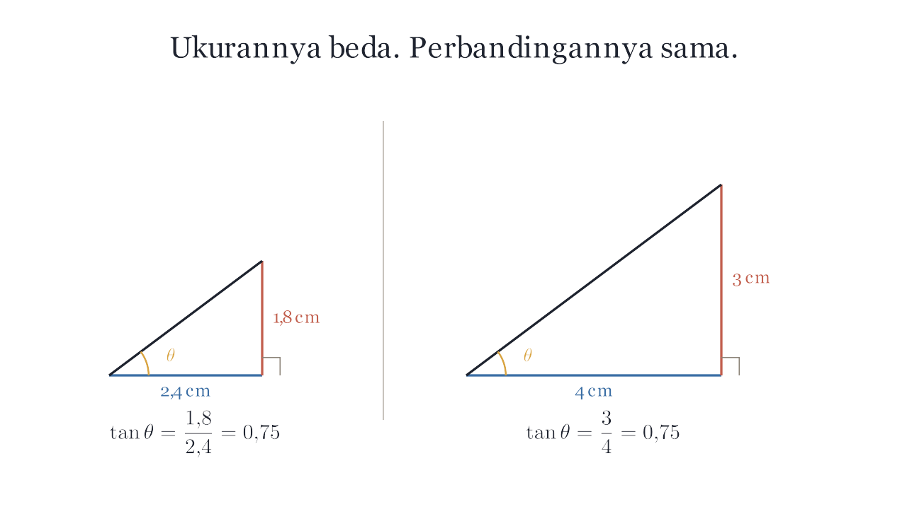

Kenapa sudut yang sama selalu memberi angka yang sama?
Animasi
Ukurannya beda, perbandingannya sama

▶ 0:48 · dibuat dengan Manim
Salah paham yang dilawan
“tan 37° itu angka mati”
Banyak siswa menghafal nilainya tanpa sadar itu perbandingan.
Selama sudutnya sama, segitiga sebesar apa pun memberi angka yang sama —
itulah sebabnya kalkulator bisa tahu jawabannya.
Buku Panduan Guru Matematika Kelas X, Bab 4
Coba sendiri
Besarkan segitiganya. Lihat mana yang berubah.
sisi depan—
sisi samping—
tan θ = depan ÷ samping
—
Rumus
Tiga perbandingan
sin θ = depan / miring
cos θ = samping / miring
tan θ = depan / samping
Latihan
4 soal bertingkat
1 Tiang 6 m, bayangan 8 m. Berapa tan sudut elevasi?
2 Segitiga siku-siku, tan θ = 0,75, miring 10 cm. Cari kedua sisi.
3 Buktikan sin θ = cos(90° − θ).
4 Dua tangga bersandar dengan sudut sama. Mana yang lebih panjang?
Uji paham
Kuis 8 soal
Nilai langsung terlihat. Salah? Ditunjukkan letak kelirunya, bukan cuma disalahkan.
Belajar lebih lanjut
Video pengajar Indonesia
▶ Perbandingan trigonometri — 14 menit
▶ Sudut istimewa tanpa hafalan — 9 menit
Tautan ke kanal asli. Kami tidak mengunggah ulang.